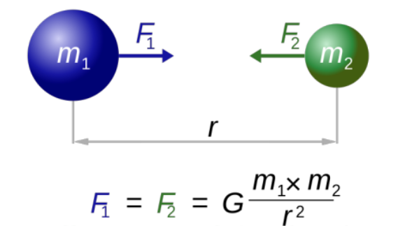
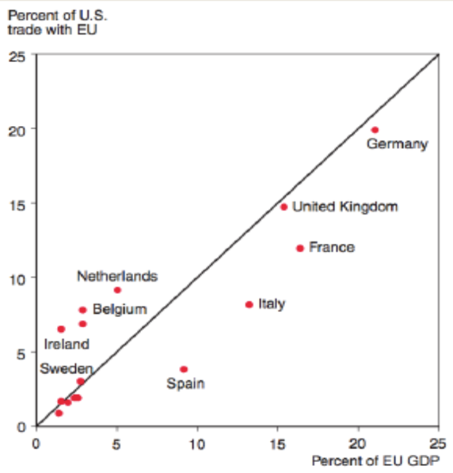
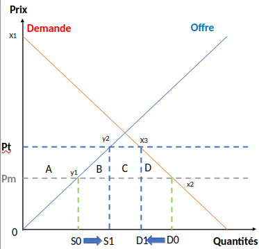
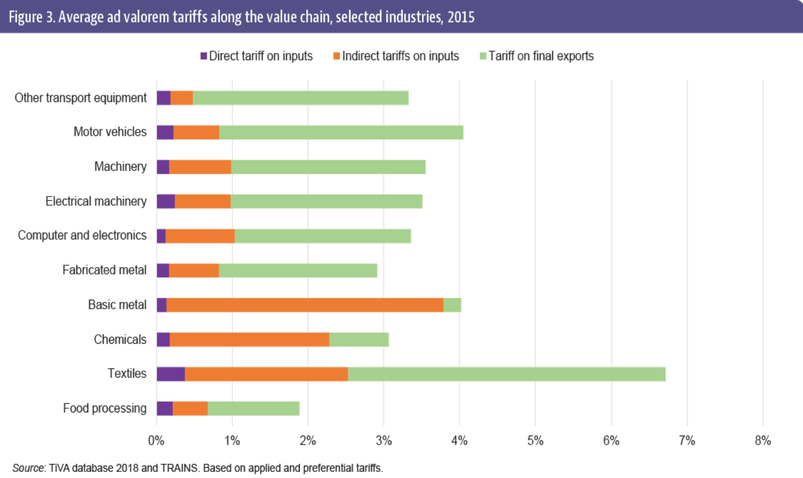

Trade (Wars)?
Topics in Economics, ESCP, 2024-2025
2025-03-16
Some news
The extraordinary threat posed by illegal aliens and drugs, including deadly fentanyl, constitutes a national emergency under the International Emergency Economic Powers Act (IEEPA).
February 1, 2025
Until the crisis is alleviated, President Donald J. Trump is implementing a 25% additional tariff on imports from Canada and Mexico and a 10% additional tariff on imports from China. Energy resources from Canada will have a lower 10% tariff.
Facts
The current US president
- threatened to implement some tariffs (25% on Canada and China)
- implemented them (see)
- threatened to do more (50% on Aluminum and Steel)
- then cancels it..
But why?
🤷♂️ He has done that in the past.
What will hapen next?
- Impossible to know without data and theory
Quick Intro / Refresher on International Trade
A famous trick question
Ulam: name a principle in the social sciences that is both true and nonobvious
Samuelson: Ricardo’s theory of comparative advantage
That this idea is logically true, need not be argued before a mathematician; that it is not trivial is attested by the thousands of important and intelligent men who have never been able to grasp the doctrine for themselves or to believe it after it was explained to them
Theories
Many theories show, under certain assumptions, the superiority of trade over autarky, in terms of economic well-being:
- The Mercantilists (16th-17th century)
- The theory of absolute advantage
- Ricardian analysis: comparative advantage
- The HOS model
- The “new” trade theory: Krugman’s model
- The “new new” trade theory: Melitz’s model
The Mercantilists
Before Smith, the Mercantilists (16th-17th century):
- International trade is a way to increase the inflow of precious metals into the Kingdom (UK).
- Underlying objective: accumulation of gold, wealth.
- Reflects the power of a country.
- A country must export more than it imports.
- Protectionism is interesting because international trade is seen as a zero-sum game: what one gains, the other loses.
Absolute Advantage

Adam Smith (1723-1790): Scottish.
One of the founding fathers of classical economics. His question: “Why do countries engage in international trade?”
- Consider two countries each producing two goods. Each country is characterized by its own productivity for the production of each good.
- A country has an absolute advantage in the production of a good if it can produce that good at a lower cost than another country. Therefore, trade is profitable and each country specializes in the production of the good for which it has an absolute advantage.
Limitation: In this theoretical framework, a country whose production costs are higher than those of all its partners cannot export profitably.
This theory does not explain why a country that is more efficient in the production of all goods would still benefit from maintaining trade relations with its neighboring countries.
The Ricardian Model
David Ricardo (1772-1823)
A country can benefit from specialization by producing the goods for which it has a comparative advantage, even if it has an absolute disadvantage in all the goods it produces (unlike Smith).
Assumption: labor is the only factor of production and is mobile within the country but immobile internationally
To show that trade is always preferable, he imagines that Portugal has an absolute advantage over England for two goods, which, according to Adam Smith’s theory, would prevent trade from occurring.
Ricardo example
| Portugal | England | |
|---|---|---|
| 1m cloth | A=90h | C=100h |
| 1L wine | B=80h | D=120h |
| Total (h) | 170h | 220h |
In which good should England specialize in? (compare productivity ratios for both countriess)
- solution: portugal specializes in wine and england in cloth
The Ricardo model has two fundamental conclusions: all countries can benefit from (the option) to trade, which allows for more efficient production.
In a trade situation, countries will specialize in the production of the good where they have a comparative advantage (higher productivity ratio).
The HOS Model (1)
First published in a more literary form by Bertil Ohlin, who attributed the co-authorship of the model to his thesis advisor, Eli Heckscher, in 1933.
In 1941, Paul Samuelson and Wolfgang Stolper deduced an important theorem on factor remuneration, which was systematically incorporated into the presentation of the model, now known by the acronym HOS.
In this model, international trade is based on differences in factor endowments (labor, capital, resources, etc.). It thus highlights that differences in productivity between countries (i.e., Ricardo) are not the only explanation for comparative advantages.
The HOS Model (2)
The conclusions of the HOS model are:
- Partial specialization of each country in the good that is relatively the most intensive in the factor with which the country is relatively best endowed (better factor endowment).
- Equalization of relative prices of goods between countries.
- Due to the relationship between relative prices and relative remunerations, the relative remuneration of the relatively rare factor in each country decreases while that of the relatively abundant factor increases.
The HOS Model
Many intuitions and results, but:
Most of its predictions are contradicted by international trade flows:
- Although the United States has one of the highest capital per capita rates, it exports relatively labor-intensive products.
- The equalization of relative prices is rarely observed, even within a monetary union like the eurozone.
- Capital mobility leads to a “degenerate” situation: after balancing relative endowments, countries find themselves in autarky!
- Perfect competition.
Increasing Returns and Imperfect Competition
In the 1970s, Krugman (1980) and Helpman (1981), then Helpman and Krugman (1985), introduced new elements into the theory of comparative advantage, which are increasing returns to scale and imperfect competition.
This model allows for the consideration of intra-industry trade between countries with similar levels of development. Why?
Increasing Returns and Imperfect Competition (2)
Product differentiation within the same industry.
- Economies of scale.
- Economies of scale allow large firms to produce at a lower unit cost.
The first entrants to the market are then advantaged, and the increasing returns (average production cost decreases as the quantity produced increases) that result from this position lead to a monopoly or oligopoly situation in the market, creating barriers to entry for new entrants.
Thus, international trade is dominated by these large companies, generally from countries with a lot of capital and operating in markets with very limited competition.
Firm Heterogeneity and International Trade
In 2003, Melitz introduced the notion of heterogeneous firms (the Melitz model)
- in Krugman’s model, firms are symmetrical, i.e., they all have the same production function
Heterogeneity contributes to amplifying the gains from liberalization
Opening up to trade contribute to raising productivity, not only through economies of scale but also through a Darwinian process of firm selection.
Explanation of Trade Flow Volumes

These models are all fascinating but are there supported by the data?
Empirical approach to explain trade: gravity models
- Statistical description of the “dynamics” of trade flows is based on an intuition from physics and “brought to light” in the 1960s.
- Explanation based on Newton’s universal gravitation model.
Explanation of Trade Flow Volumes
Newton Gravity Model

Trade Gravity model
\[V_ij = G \frac{(M_i)^(\beta_1) (M_j)^(\beta_2)}{(D_ij)^ \beta_3} \eta_ij\]
- \(V_ij\): exports from country \(i\) to country \(j\)
- \(M_i\) (resp \(M_j\)): GDP of country \(i\) (resp \(j\))
- \(D_ij\): distance between \(i\) and \(j\)
- \(\eta_j\): Differences in factor endowments and technology,
- \(D_{ij}\): physical or cultural distance, other trade barriers
Works fairly well and confirms predictions from the theories.
Empirical Confirmation of Gravity Models


Conclusion
Theoretical models “justify” trade, with (globally and without considering externalities) mutual gains, thanks to:
- An increase in the number of available products (taste for variety, i.e., horizontal differentiation, or products that cannot be produced elsewhere).
- Efficiency gains: resources are used to produce the goods for which the country (i.e., its most efficient firms) is most efficient.
- Econometric estimates confirm the trade structure predicted by the models (gravity models).
Trade Policy
Theory and Practice…
In theory, trade is profitable.
In practices all countries protect themselves.
Let’s discuss briefly:
- the reasons
- the tools
- the effects
of these trade policies
Justifications
- To protect infant industries
- Protection of new domestic industries from foreign competition to allow them to develop
- because setting up a new industry takes time and has fixed costs protections are temporary until the industry is mature
- To protect/develop strategic sectors
- Protection from competition in certain strategic sectors: defense, health, energy…
Justifications (2)
- To avoid dumping
- When competitors’ export prices are lower than the prices they charge in their own markets (very difficult to assess).
- For macroeconomic reasons
- Large countries can manipulate their terms of trade by changing the price of the goods they import.
- PX/PM, i.e., their ability to buy imports based on the price of their exports
- Promoting exports allows to accumulate foreign currency
- that can be used to stabilize exchange rate
- Limiting imports of goods that create an unfavorable balance of payments.
- Large countries can manipulate their terms of trade by changing the price of the goods they import.
Justifications (3)
- To generate tax revenue
- Customs duties provide significant tax revenue
- even in the United States before the introduction of value-added tax or income tax
- 28% of government revenue in Côte d’Ivoire, for example.
- Easier to implement than other taxes, especially in developing countries.
- Customs duties provide significant tax revenue
- For political reasons
- Various interests, producer lobbies, consumer lobbies…
- Limiting the losses of the “losers of globalization” (unskilled labor).
- Role of voting mechanisms, importance of rural areas.
Justifications (4)
- Market failures theoretically justify public interventions in agriculture
- The market is not the most appropriate instrument for the production of certain goods or services that are public goods (health, landscape, rural life…) and to take into account externalities
- Strategic sector (and therefore also protection from competition)
General Theory
- Economic theory has developed a field of analysis of this demand for protection: the political economy of protectionism.
- An abundant literature.
- Reference model: Protection for Sale (Grossman-Helpman (1994))
Protection For Sale
The Grossman and Helpman model is a common agency model (one agent, several principals) with a two-stage game.
The basic analytical framework is that of a model with several production sectors with specific factors. Each sector produces a particular good with labor and a factor of production specific to the sector.
The vector of trade policy determines a tariff (positive or negative) on imports in each sector.
The model features pressure groups:
- representing the different production sectors
- they define their contributions conditionally on the trade policy vector, i.e., conditionally on tariff levels for all sectors of the economy.
It is a zero-sum game
Protection For Sale
In the first stage, pressure groups define their contribution functions.
Pressure groups choose their contributions non-cooperatively and independently of each other, in order to maximize the welfare of their members.
In the second stage, the incumbent government chooses its political position taking into account the contribution functions defined by the pressure groups.
Protection For Sale
Formally, the government seeks to maximize an “objective” function that is a weighted average of contributions and general welfare, with the goal of rewarding interest groups and being re-elected in the next election.
Candidates must therefore balance policies that favor particular interest groups with those that align with the general interest.
The equilibrium of this game is characterized by:
- A vector of contribution functions (one for each pressure group) such that each contribution function maximizes the welfare of the members of the respective pressure group, given the contribution functions defined by other pressure groups and the anticipated decision rule of the government;
- A vector of tariffs (one for each sector) that maximizes the government’s “objective” function.
Protection For Sale
Theoretical Results:
Only production sectors represented by a pressure group benefit from positive protection, while non-represented sectors face a negative import tariff on the goods they produce.
Explanation:
- interest groups pressure the government for high selling prices in their own production sectors and low prices in other sectors, as they are also consumers of goods produced by other sectors.
The influence game thus leads to a redistribution, through a system of taxes, of resources from non-organized sectors to politically organized ones.
Protection For Sale
Predictions of the model:
The level of protection in a sector is higher when:
- The ownership of the specific factor in the concerned sector is concentrated.
- The relative weight of general welfare, compared to the contributions of pressure groups, in the government’s “objective” function is low.
- The larger the production share of the considered sector, the higher its level of protection due to the volume of benefits from the influence game.
- If the price elasticity of the import function is low (the import level is not very sensitive to an increase in the import tariff), the tariff level for the sector organized into a pressure group is high
Protection For Sale
Predictions of the model:(cont’d):
- When all sectors of the economy are organized into pressure groups, the government’s policy aligns with the general interest
- zero import tariff for all sectors
- influence groups neutralize each other, and each group’s contributions aim to avoid being affected by the influence of other groups
- Even so, the game results in a loss of general welfare
- represented by the expenditures of the pressure groups.
🤔 Does this sounds like a realistic depiction of US trade policy?
Various Tools
Tariff: the most beautiful word in the dictionary 1
But many tools are available for trade policy:
- tariffs
- ad valorem: a fraction of the import price
- export subsidies
- consumption tax
- quantitative restrictions: quotas
- export restrictions
- export taxes
- Non Tariff Measures
Tariffs: Impact
Let’s now graphically analyze the consequences of implementing an ad valorem tariff, “t”.
We assume a small country, importing a homogeneous good (rice).
In this situation, the domestic price of the good is equivalent to the international price pm.
This situation characterizes the initial equilibrium, with international trade but without protection measures.
We then assume that a tariff “t” is implemented as a percentage of the value of rice imports, for example, 20 or 30 percent.
Tariffs: Impact
Tariffs: Impact
Summary: The implementation of this tariff triggers a series of reactions from rice producers (for example), consumers (and traders), until a new equilibrium is reached in the domestic rice market.
If we add up surplus and public revenues (1 Euro gained or lost by the producer = 1 Euro gained or lost by consumers = 1 Euro of public revenue). The tariff has a negative effect: gray areas (triangle = deadweight losses).
Important point: identify the winners and losers.
Conclusion: the tariff mainly serves to protect the producer. If it is per-unit, it helps protect the consumer (from low-priced goods that may be of poor quality). It allows for the collection of tariff revenues.
Other measures
The same analysis can done for all other protection measures.
- All measures ultimately lead to deadweight losses, but with different distribution of the gains between the various actors (producers, consumers, government)
To measure the distortion of a particular measure they are often converted in ad valorem equivalent.
Non-Tariff Measures
Very complex subject (in terms of quantitative analyses).
Non-tariff measures (NTMs) are policy measures, other than tariffs, that can affect international trade in goods.
The effect of NTMs on trade can be the primary objective of the implemented policy (e.g., quotas or import bans), or it can be a consequence of another policy objective (e.g., product quality control or packaging requirements).
Non-Tariff Measures
According to WTO agreements, the use of NTMs is allowed under certain circumstances. They include, among others, the Agreement on Technical Barriers to Trade (TBT) or the Agreement on Sanitary and Phytosanitary Measures (SPS), both negotiated during the Uruguay Round.
These agreements allow governments to implement policies with a legitimate objective even if they may increase trade costs.
However, NTMs are sometimes used as a means to circumvent free trade rules and protect domestic industries at the expense of foreign competition. In this case, NTMs are called non-tariff barriers (NTBs).
It is very difficult, if not impossible, to distinguish legitimate NTMs from protectionist NTMs, especially since the same measure can be employed for different reasons.
Non-Tariff Measures
To facilitate the collection and dissemination of information on NTMs in force in each country, a classification system for NTMs was developed in 2008 by a group of experts from 8 international organizations - FAO, IMF, ITC, OECD, UNCTAD, UNIDO, World Bank, and WTO - and revised in 2009 and 2012.
This classification has a total of 16 chapters ranging from letter A to letter P. It distinguishes between import measures (Chapters A to O) imposed by the importing country and export measures (Chapter P) applied by the exporting country itself. Import measures are then categorized into two main groups, technical measures and non-technical measures.
Non-Tariff Measures
Technical Measures
- A. Sanitary and phytosanitary measures
- B. Technical barriers to trade
- C. Pre-shipment inspection and other formalities
Non-Technical Measures
- D. Contingency measures aimed at protecting trade
- E. Non-automatic licensing, quotas, prohibitions, and other restrictions
- F. Measures related to SPS or TBT reasons
- G. Price control measures (including taxes)
- H. Financial measures
- I. Anti-competitive measures
- J. Trade-related investment measures
- K. Distribution restrictions
- L. Restrictions on after-sales services
- M. Subsidies (not classified elsewhere)
- N. (Not fully visible in the original, often associated with government procurement or intellectual property measures)
- O. Rules of origin
Non-Tariff Measures
Examples of measures classified in Chapter A:
- Ban on importing poultry from countries affected by avian flu;
- Eggs sold in liquid form must be pasteurized or treated to eliminate microorganisms responsible for salmonellosis;
- Animals must be quarantined for two weeks before entering the territory.
Non-Tariff Measures
Chapter B: Technical Barriers to Trade (TBT)
- These measures relate to technical requirements and conformity assessment procedures for products with respect to applicable regulations and standards, excluding measures governed by the SPS Agreement.
Examples:
- Importers of “sensitive products” such as medical products, explosives, weapons, alcohol, tobacco, slot machines, etc., may be required to register in the importing country;
- Refrigerators must bear a label indicating their size, weight, and electricity consumption;
- For a product to be identified as “chocolate,” it must have a minimum concentration of 30% cocoa.
Non-Tariff Measures
Chapter C: Customs inspection and other border crossing formalities in C
Examples:
- Imports of live animals must be done through a specific customs office and not others.
- A good must arrive directly from its country of origin without stopping in a third country.
- There is a trade facilitation agenda: this covers the full range of border procedures, from electronic data exchange for a shipment of goods to the simplification and harmonization of import-export documents and the possibility of appealing administrative decisions made by border authorities.
- Notably at the WTO, the TFA (Trade Facilitation Agreement) is the major result obtained during the last negotiation round.
Non-Tariff Measures
How much NTMs?
- The Kee et al. (2009) database proposes an ad valorem equivalent of non-tariff barriers (NTBs).
- The authors first estimate the impacts of NTBs on trade flows.
- They then convert these effects into AVEs, using import demand elasticities
- Large: approx. 90 countries, with about 4,575 products categories
Results:
- The average AVE is 12%, considering all lines. If only lines containing NTMs are considered, the average is 45%!
But Beneficial Effect on Trade for Technical Measures
Because technical NTMs address market imperfections, transparency, negative externalities… and can therefore have a positive effect on demand for imported goods.
But there is always a negative correlation between the price of the good and imported quantities.
Trade Policy & GVCs
In a world of GVCs, the trade policy of an economy cannot be exclusively focused on trade barriers between that economy and its direct trading partners.
The entire value chain and bottlenecks existing upstream and downstream between third countries must be considered.
The success of an economy in international markets depends as much on its ability to import top-quality inputs as on its ability to export.
Value-added trade data show how GVCs amplify the costs of customs protection mechanisms: cumulative nature of tariffs since intermediate consumptions cross borders repeatedly.
Tariffs along the GVC: total tariff affecting the export of a good
Were are we headed?
Historical Context Pre-WWII
19th century: period of relative free trade
- Anticorn laws, Franco-English commercial treaties, colonies, unilateral liberalization…
Late 19th - early 20th century: first wave of protectionism
- Méline Laws 1892
- Implementation of higher tariffs, quotas, embargo…
Between the two wars, Great Depression
- Highly protectionist policies
- Safeguarding of Industries Act 1921 in Britain
- Smoot–Hawley Tariff Act US 1930
- Exacerbates the crisis, 40% reduction in American imports, repercussions on international relations…
The Multilateral Trading System
The GATT (1947-1994)
The WTO (1995-2025)
The Main Objectives of the WTO
Promote wealth creation through international trade liberalization, but obstacles:
- Political economy: liberalization costs concentrated on a few well-organized sectors. Diffuse benefits (consumers) poorly organized politically with low individual interest.
- Limit the “free-rider” effect
- Ensure the continuity of the GATT
Grant special concessions and assistance to developing countries
General Philosophy
A negotiation framework…
- … governed by a set of rules…
- … to help resolve disputes between states under the aegis of an impartial arbitrator.
Only governments (under influence?) participate in the game
Mercantilism vs. Ricardianism.
General Principles and Associated Tools
Non-discrimination (clarification of GATT principles)
Most-Favored-Nation Clause (“MFN clause”): any trade advantage granted by one country to another (even if it is not a WTO member) must be immediately extended to all WTO members.
- National treatment principle: imported products or services on the territory of a member must not be treated less favorably than domestic products or services.
General Principles and Associated Tools (2)
- Freer trade: a progressive and negotiated path
- Reciprocity: Countries exchange concessions on market access, for example, but also changes in regulations on standards (sanitary, technical…) or property rights
- Fair competition
- Transparency and predictability
- Consolidation: negotiations focus not on applied tariffs but on bound tariffs (ceilings)
- Notification and information obligations
- Trade Policy Review Mechanism
Today
In the USA:
- Return of protectionist policies?
- Exit from NAFTA (USMCA), WTO… seems difficult but not impossible.
- Trade war with China.
- 15-year-old dispute with the EU over subsidies in the aerospace sector.
- Bilateral agreements?
In Europe:
- Politicization of trade and trade policy issues.
- Question of European competence.
- Difficulties encountered in ratifying CETA (free zone with Canada) suggest that future EU participation in free trade agreements will be difficult.
- Brexit.
USA: First Trump Mandate
Future is hard to predict, but look at the past
When taking office in January 2017, President Trump has challenged some regional free trade agreements:
- US withdrawal from the Trans-Pacific Partnership.
- Renegotiation of NAFTA.
Then commercial protection measures announced in March 2018, exceptional in their motivation and importance.
USA: First Trump Mandate
First Trump administration: a 58% increase in the number of (retaliatory) anti-dumping and anti-subsidy measures between 2016 and 2017.
With one exception (the first self-initiated case in 25 years), their initiative comes from companies, even if they respond to signals sent by the government.
Two measures announced in March 2018:
- Additional tariffs imposed in the name of national security (i.e., section 232 of the 1962 Trade Act) on steel (25%) and aluminum (10%) imports.
- Retaliation against technology transfers and China’s intellectual property protection policy, imposing an additional 25% tariff on various products from China.
USA: First Trump Mandate
In principle: these measures allowed under WTO rules (exception for national security reasons).
In form: contrary to commitments because purely political bases.
Measures especially exceptional by the amounts involved:
- Measures on steel and aluminum initially targeted all partners, about \(50\) billion dollars in imports (2017).
- Then exemptions for certain countries (Australia, EU, South Korea, Canada, Mexico…).
- Despite the fuss:
- the US stayed in WTO
- measures have maily targeted China
- Will it be the case again?
What do you think?
What is the motivation for Mr Trump?
Should other countries retaliate?
Will history repeat itself?